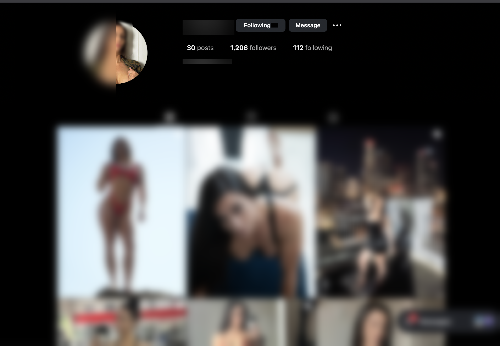
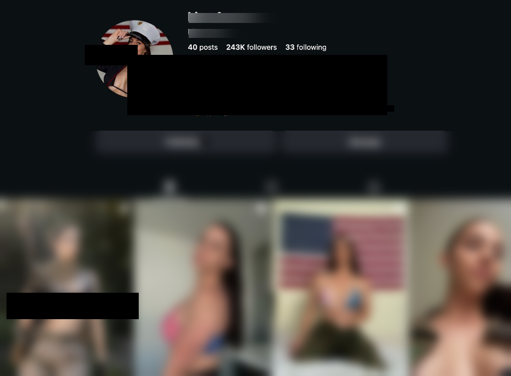

$0 to $1M in 6 months$0 a $1M en 6 meses
Kiera
$79/mo to $1,000,017 in 6 months$79/mes a $1,000,017 en 6 meses
Zero to $1M cash collected in 6 months. 100% organic. Zero ad spend.De cero a $1M cobrados en 6 meses. 100% orgánico. Cero inversión en ads.
The starting pointEl punto de partida
Kiera was earning $79 per month, ranked Top 29% of creators, and felt stuck doing the same thing with the same result that just wasn't worth it. On our first call she said her goal was to become a top 5% creator in 6 months. What happened was something she never even thought possible...Kiera estaba ganando $79 al mes, en el Top 29% de creadoras, y se sentía atascada haciendo lo mismo con el mismo resultado que ya no valía la pena. En nuestra primera llamada dijo que su meta era llegar al top 5% en 6 meses. Lo que pasó superó por completo lo que ella creía posible...

BeforeAntes
AfterDespués


What we didQué hicimos
Kiera's launch was 100% organic. We built her brand identity, content strategy, and monetization engine from scratch. Her fourth reel posted to Instagram went viral with over 4 million views, within 2 weeks she had over 15K followers when we dropped her link. She made over $11,000 in her first week and $68,700 in her first month.El lanzamiento de Kiera fue 100% orgánico. Construimos su identidad de marca, su estrategia de contenido y su motor de monetización desde cero. Su cuarto reel en Instagram se hizo viral con más de 4 millones de vistas, en 2 semanas pasó los 15K seguidores cuando lanzamos su link. Ganó más de $11,000 en su primera semana y $68,700 en su primer mes.
Month-by-month growthCrecimiento mes a mes
30 day results: $85,966 gross

60 day milestone: $201,395 gross

Month 4: $282K net in 30 days. Sustained high traffic and 400-700 new fans per day.

Instagram explosionExplosión en Instagram
In December, Kiera's Instagram went from niche to mainstream. She hit 44.3 million views in a single month, with 96% from non-followers. She crossed 100K followers and kept climbing past 160K.En diciembre, el Instagram de Kiera pasó de nicho a mainstream. Llegó a 44.3 millones de vistas en un solo mes, con 96% provenientes de no-seguidores. Cruzó los 100K seguidores y siguió subiendo hasta superar 160K.


6 months: $1,000,017 cash collected6 meses: $1,000,017 cobrados
From October 1, 2025 to April 2, 2026, the team collected $1,000,017 in cash sales operating Kiera's accounts. She moved from being in the 30% percentile to a Top 0% creator, the gold standard for all models on the platform. Weekly earnings consistently between $20K-$70K with no signs of slowing down. She's earned more income in 6 months than neurosurgeons make in a year.Del 1 de octubre de 2025 al 2 de abril de 2026, el equipo cobró $1,000,017 en ventas operando las cuentas de Kiera. Pasó del percentil 30% al Top 0%, el estándar de oro entre todas las modelos en la plataforma. Ingresos semanales constantes entre $20K-$70K sin señales de bajar. Ha ganado más en 6 meses que un neurocirujano en un año.


High-ticket customsCustoms de alto valor
Consistent $1,000+ custom video orders across multiple months. Premium pricing that fans pay without hesitation.Órdenes constantes de videos custom de $1,000+ durante varios meses. Precios premium que los fans pagan sin dudar.


Key resultsResultados clave
- $79/month to $1,000,017 gross in 6 months$79/mes a $1,000,017 brutos en 6 meses
- Top 29% to Top 0.04% of all creatorsDel Top 29% al Top 0.04% entre todas las creadoras
- $663,568 from messages, $173,784 from subscriptions, $113,057 from tips$663,568 de mensajes, $173,784 de suscripciones, $113,057 de tips
- Instagram: 1,206 to 243,000 followers (201x growth)Instagram: 1,206 a 243,000 seguidores (crecimiento 201x)
- 44M+ Instagram views in a single monthMás de 44M de vistas en Instagram en un solo mes
- 42% subscriber renewal rateTasa de renovación de suscriptores del 42%
- $0 chargebacks across entire period$0 contracargos durante todo el período
- Zero dollars spent on adsCero dólares en ads
- 100% organic growth100% crecimiento orgánico
Ready for results like these?¿Lista para resultados así?
Every creator we work with gets a dedicated team. Apply today.Cada creadora con la que trabajamos tiene un equipo dedicado. Postula hoy.
APPLYPOSTULAR